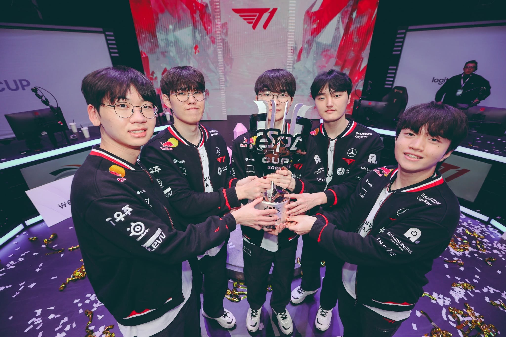
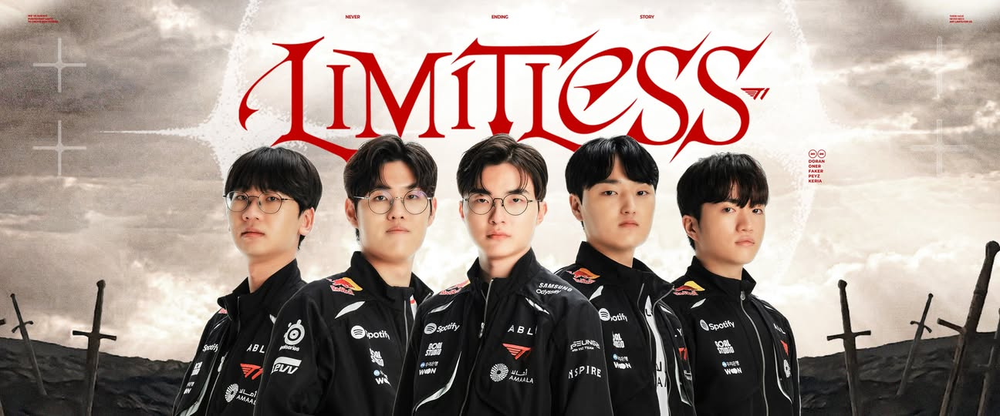

Choi "Doran" Hyeon-joon (born July 22, 2000) is a renowned South Korean professional League of Legends player currently playing as the Top Laner for T1. Known for his resilience, aggressive style, and exceptional teamfight mechanics, Doran continues to be a cornerstone for top-tier competitive rosters.
Having competed across top LCK organizations such as Griffin, DRX, KT Rolster, Gen.G, and Hanwha Life Esports, Doran brings immense experience, leadership, and clutch playmaking to the current T1 lineup.

